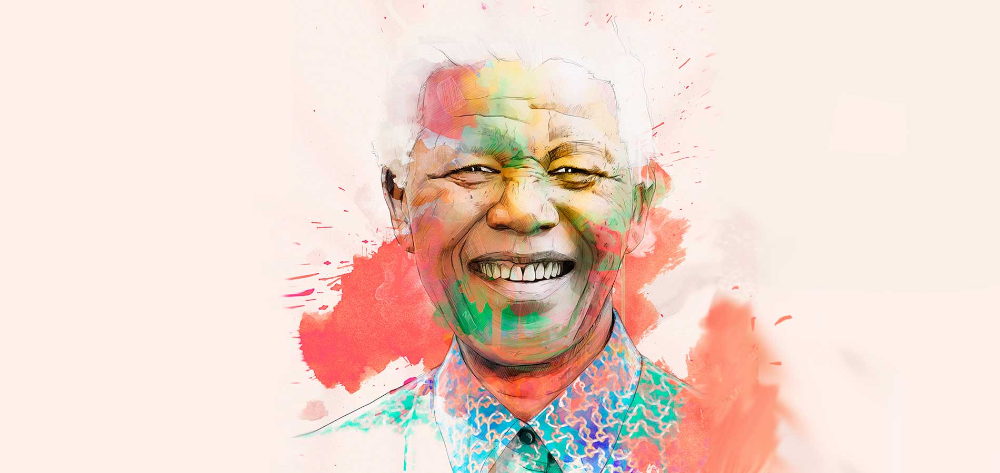

"It always seems impossible until it´s done."
Nelson Mandela (1918-2013) foi presidente da África do Sul. Foi o líder do movimento contra o Apartheid - legislação que segregava os negros no país. Condenado em 1964 à prisão perpetua, foi libertado em 1990, depois de grande pressão internacional. Recebeu o “Prêmio Nobel da Paz”, em dezembro de 1993, pela sua luta contra o regime de segregação racial.
Nelson Mandela (1918-2013) nasceu em Mvezo, África do Sul, no dia 18 de julho de 1918. Filho em uma família de nobreza tribal, da etnia Xhosa, recebeu o nome de Rolihiahia Dalibhunga Mandela. Em 1925 ingressou na escola primária, onde recebeu da professora o nome de Nelson, em homenagem ao Almirante Horatio Nelson, seguindo um costume de dar nomes ingleses a todas as crianças que frequentavam a escola. Com nove anos de idade, após a morte do seu pai, Mandela foi levado para a vila real, onde ficou aos cuidados do regente do povo Tambu. Ao terminar sua formação elementar, Entrou na escola preparatória, Clarkebury Boarding Institute, um colégio exclusivo para negros, onde estudou a cultura ocidental. Em seguida, ingressou no Colégio Healdtown, onde era interno. Em 1939, Mandela ingressou no curso de Direito, na Universidade de Fort Hare, a primeira Universidade da África do Sul a ministrar cursos para negros. Por se envolver em protestos, junto com o movimento estudantil, contra a falta de democracia racial na instituição, foi obrigado a abandonar o curso. Mudou-se para Joanesburgo, onde se deparou com o regime de terror imposto à maioria negra. Em 1943, concluiu o bacharelado em Artes pela Universidade da África do Sul. Continuou os estudos de Direito, por correspondência, na universidade de Fort Hare. (Mais tarde receberia o título de "Doutor Honoris Causa", na tentativa de compensar a sua expulsão).
Em 1960, diversos líderes negros foram perseguidos, presos, torturados, assassinados ou condenados. Entre eles estava Mandela, que em 1964 foi condenado à prisão perpétua. Na década de 80, intensificou-se a condenação internacional ao apartheid que culminou com um plebiscito que terminou com a aprovação do fim do regime. No dia 11 de fevereiro de 1990, depois de 26 anos, o presidente da África do Sul Frederik de Klerk, liberta Mandela. Ao sair da prisão, Mandela faz um discurso chamando o país para a reconciliação: “Eu lutei contra a dominação branca e lutei contra a dominação negra. É um ideal pelo qual eu espero viver e que eu espero alcançar. Mas caso seja necessário, é um ideal pelo qual eu estou pronto para morrer”. Em 1993, Nelson Mandela e o presidente assinam uma nova Constituição sul-africana, pondo fim a mais de 300 anos de dominação política da minoria branca, preparando a África do Sul para um regime de democracia multirracial. Nesse mesmo ano, recebem o Prêmio Nobel da Paz, pela luta em busca dos direitos civis e humanos no país.
Após longas negociações, Mandela conseguiu a realização das eleições multirraciais em abril de 1994. Seu partido saiu vitorioso, e Mandela foi eleito presidente da África do Sul. Finalmente, seu governo, com maioria no parlamento, acabou com o longo período de opressão aprovando importantes leis em favor dos negros. Mandela governou até 1999, quando conseguiu eleger seu sucessor. Em 2006, foi premiado pela Anistia Internacional, por sua luta em favor dos direitos humanos.
Em 1944, Mandela casa-se com a enfermeira Evelyn Mase, com quem teve duas filhas e dois filhos. Em 1958 o casal se separa e nesse mesmo ano, casa-se com a militante antiapartheid, Winnie Madikizela, com quem teve duas filhas. Em 1995 o casal se separa. Em 1998, casa-se com Graça Machel. Em 1999, ao deixar a presidência, vai morar com Graça em seu pequeno vilarejo de Qunu, quando criam uma fundação em defesa dos direitos humanos. Nelson Mandela faleceu em Joanesburgo, África do Sul, no dia 5 de dezembro de 2013.